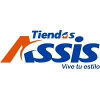
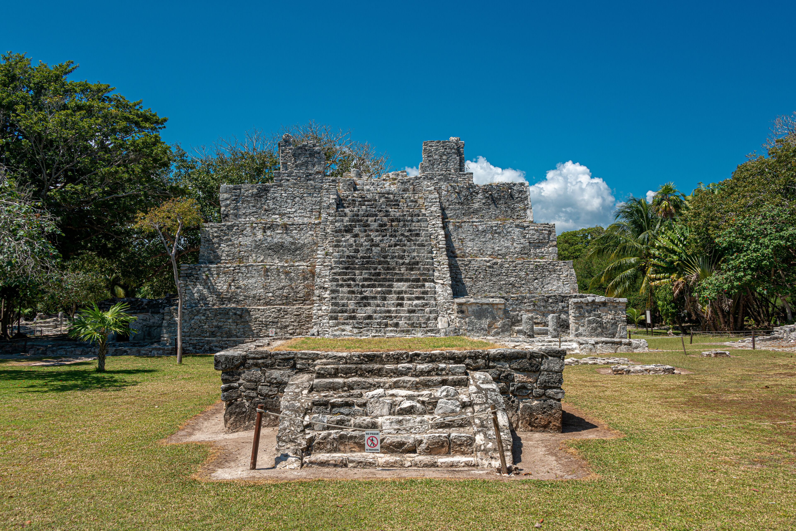
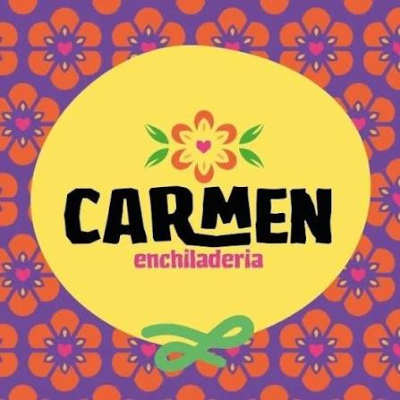
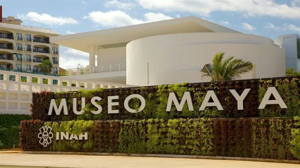
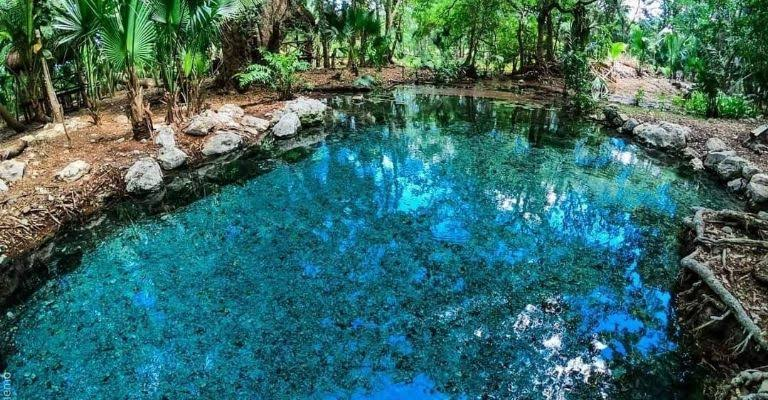
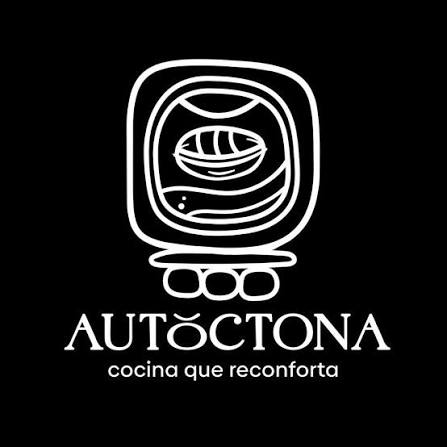

Vive tus sueños en persona

Como punto de inicio y recolección de nuestros viajeros, se les solicita estar en el lugar indicado 15 minutos de anticipación.

Como primer punto de visita recorreremos la zona arqueologica del meco ubicado en la carretera Puerto Juarez, López Portillo. En donde los turistas podran reccorr y saber mas acerca de este increible yacimiento maya.

Como primera parada gastronomica Carmen enchiladeria los recibira con la calidez que los identifica disfrutando y consintiendo a su paladar con deliciosos antojitos tipicos veracruzanos; Ete ubicado en la Av. Yaxchilan.

Ubicado en el kilómetro 16.5 de la Zona Hotelera de Cancún los turistas podran disfrutar de un recorrido guiado dentro del museo maya, casa de las grandes exibiciones de la culrura, dandoles un taller interactivo y educativo reccorriendo la zona arqueologica de San Miguelito.

Ubicado en la ruta de los cenotes, el cenote Ich Ha mayormente conocido como cenote ojo de agua será el lugar en donde los turistas podran disfrutar de las increibles aguas cristalinas de nuestro cenote contando con zonas de salto y tirolesas para que tengan una de las mejores experiencias acuaticas.

Como segunda y ultima parada gastronomica para Kalubú tours es muy importante el bienestar y disfrute de nuestros viajeros, por lo que les presenta el restaurante Autotocna ubicado en la Av. Yaxchilan. Nuestros turistas podran disfrutar de las comidas tipicas de nuestra reguión, sumergiendose en la atmosfera y calidez de los platillos yucatecos llenos de sabor como de historia, siendo ahi mismo un taller de leyendas de nuestra región.
Siendo el final de este increible tour nuestro transporte regresara al mismo punto de inicio ubicado en la Av. Kabah frente a tiendas ssis para decender a nuestros turistas dando concluido nuestro servicio.